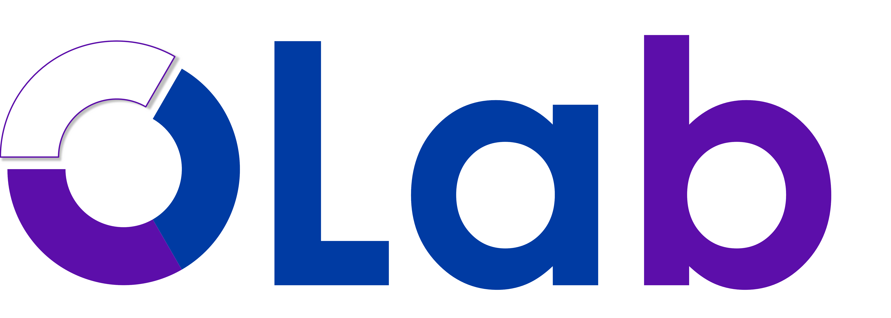

Hong T.M. Chu, Dr.
Assistant Professor
College of Engineering & Computer Science, VinUniversity, Vietnam
hongtmchu@gmail.compreferred
/
hongtmchu@u.nus.edu
/
hong.ctm@vinuni.edu.vn
About
Research Interests
I am interested in computational approaches to optimal transport and Wasserstein distributionally robust optimization problems. I specialize in designing fast computational methods and efficient algorithms to solve these problems, particularly in the context of robust machine learning and deep neural networks. A key part of my research involves analyzing tractable regularization techniques and their distributionally robust interpretations.
Short Bio
Hong T.M. Chu is currently an Assistant Professor of Mathematics at the College of Engineering and Computer Science, VinUniversity, Vietnam. Prior to her current appointment at VinUniversity, she was a Research Fellow in the Department of Mathematics at the National University of Singapore. She received her PhD in Mathematics from the National University of Singapore under the supervision of Professor Kim-Chuan Toh. She has received Teaching Assistant Awards from the Faculty of Science (AY 2019-2020 & AY 2020-2021), Teaching Award from VinUniversity (AY 2024-2025) and has been nominated as a Faculty of Science Postgraduate Alumni Ambassador at the National University of Singapore.
Acknowledgements
I am sincerely grateful to the organizers of Joint Mathematics–Statistics PhD Homecoming, Foundations of causal inference, Joint ASEAN-Africa Workshop on Computational and Applied Mathematics for their generous full sponsorship of my visits. I also extend my deep appreciation to the Vietnam Institute for Advanced Study in Mathematics (VIASM) for hosting and fully funding our proposed Mini-Course VADRO program. This collective support has been invaluable in facilitating my research collaborations and allowing me to share my work with the broader communities.
Employment
-
2024 – presentAssistant Professor College of Engineering & Computer Science, VinUniversity, Vietnam
-
2023 – 2024Research Fellow Department of Mathematics, National University of Singapore, Singapore
-
2017 – 2018Research Assistant Institute of Mathematics, Vietnam Academy of Science and Technology, Vietnam
Education
-
2018 – 2023Ph.D. in Mathematics Department of Mathematics, National University of Singapore, Singapore
Supervisor: Professor Kim-Chuan Toh -
2013 – 2017Bachelor of Mathematics Faculty of Mathematics & Information Technology, Hanoi National University of Education, Vietnam
Publications & Preprints
Preprints
On the Convergence of Wasserstein Gradient Descent for Sampling
Time-integrated Optimal Transport: A Robust Minimax Framework
Tight Robustness Certificates and Wasserstein Distributional Attacks for Deep Neural Networks
Implicit Regularization via Spectral Neural Networks and Non-linear Matrix Sensing
Journal Publications
Wasserstein distributionally robust optimization and its tractable regularization formulations
A Corrected Inexact Proximal Augmented Lagrangian Method with a Relative Error Criterion for a Class of Group-quadratic Regularized Optimal Transport Problems
On Regularized Square-root Regression Problems: Distributionally Robust Interpretation and Fast Computations
An efficient implementable inexact entropic proximal point algorithm for a class of linear programming problems
Optimization Lab (OLab)

We aim to solve complex problems with optimal solutions and strategies. Our primary research interests include numerical optimization, operation research, and various real-world applications.
Members (7)
Current
-
Bach Chi Le VinUniversity 6/2025 – present
-
Dao Van Tung VinUniversity 8/2025 – presentQuantum Machine Learning, Robust Optimization CV — Homepage
Undergraduate Students
-
Nguyen Dinh Thai An VinUniversity 2/2025 – presentOptimal Transport in Practical, Optimal Transport CV — Homepage —
-
Tran Minh Khang VinUniversity 10/2024 – presentDistributional Robust Portfolio Optimization CV Homepage —
Alumni
-
Hung Phan National University of Singapore 11/2025 – 8/2026
-
Long V.H. National University of Singapore 1/2025 – 7/2025Constrained Min-Max Optimization, Stackelberg Games CV — Homepage —
-
Thai P.D. Nguyen National University of Singapore 10/2024 – 12/2025Continuous Optimization, Convex Optimization, Optimal Transport CV — Homepage —
Recruitment Opportunities (RA / PE / PhD)
I am actively seeking highly motivated Research Assistants (RA) and Programming Engineer and Ph.D. candidates to join OLab. Candidates should have a strong background in mathematics, computer science, or a related field.
- Numerical Optimization and Algorithms
- Optimal Transport and Wasserstein DRO
- Robust Machine Learning / Deep Neural Networks
- Operational Research and Real-world Applications
If you are interested, please send me an email with Application to OLab in the subject line.
Programming Languages
- Python
- MATLAB
Awards
-
2025Teaching Award Full-time teaching faculty award AY 2024/2025, VinUniversity
-
2021Teaching Award Part-time teaching assistant award AY 2020/2021, NUS
-
2020Teaching Award Part-time teaching assistant award AY 2019/2020, NUS
Talks
Upcoming
-
Nov 2026INFORMS Annual Meeting 2026 San Francisco
-
Oct 2026International Workshop on Optimization, Variational Analysis, and Control Theory Institute of Mathematics, Vietnam Academy of Science and Technology, Hanoi
Past (9)
-
Aug 2026International Conference on Applied Mathematics and Informatics 2026 (AMI 2026) Hanoi University of Science and Technology, Vietnam
-
Jul 2026International Conference on Optimization and Machine Learning National Taiwan Normal University
-
Jul 2026Eighth Conference on Discrete Optimization and Machine Learning Institute of Science Tokyo (formerly Tokyo Tech)
-
Apr 2026Joint ASEAN-Africa Workshop on Computational and Applied Mathematics Institute for Mathematical Sciences, Singapore
-
Oct 2025Joint Mathematics–Statistics PhD Homecoming Institute for Mathematical Sciences, Singapore
-
Oct 2025International Workshop on Weakly Supervised Learning Southeast University, China
-
Jun 2023SAMI Hanoi University of Science and Technology, Vietnam
-
May 2023SIAM Conference on Optimization Seattle
-
Mar 2023The 6th Mathematics Symposium in Singapore Singapore
Service
Administrative Service
-
Jul 2026Organizing Committee Mini-Course: Variational Analysis and Distributionally Robust Optimization in Learning, VIASM, Vietnam
-
Jul 2026Organizing Committee Learning and Optimization for a Sustainable Future, VinUniversity, Vietnam
-
2023 – 2028Ambassador NUS Faculty of Science Postgraduate Alumni Ambassador (FPAA)
-
Spring 2024Preliminary & Final Judge Singapore Science & Engineering Fair (SSEF)
-
Jan 2024Member of Organizing Committee The Mathematics of Data, Institute for Mathematical Sciences, Singapore
Reviewer Service
- JOTA
- EJOR
- ICML 26
- ACML 24
- AISTATS 25 / 26
- OIC 24 / 25
- SOICT 25
Teaching
-
2024 – nowLecturer — VinUniversity MATH1010 (Calculus I), MATH2010 & MATH4010 ((Advanced) Probability & Statistics), DATA1010 (Introduction to Data Science)
-
2020 – 2022Teaching Assistant — National University of Singapore DSA3102 (Essential Data Analytics Tools: Convex Optimisation), MA3252 (Linear and Network Optimisation), MA1102R (Calculus)